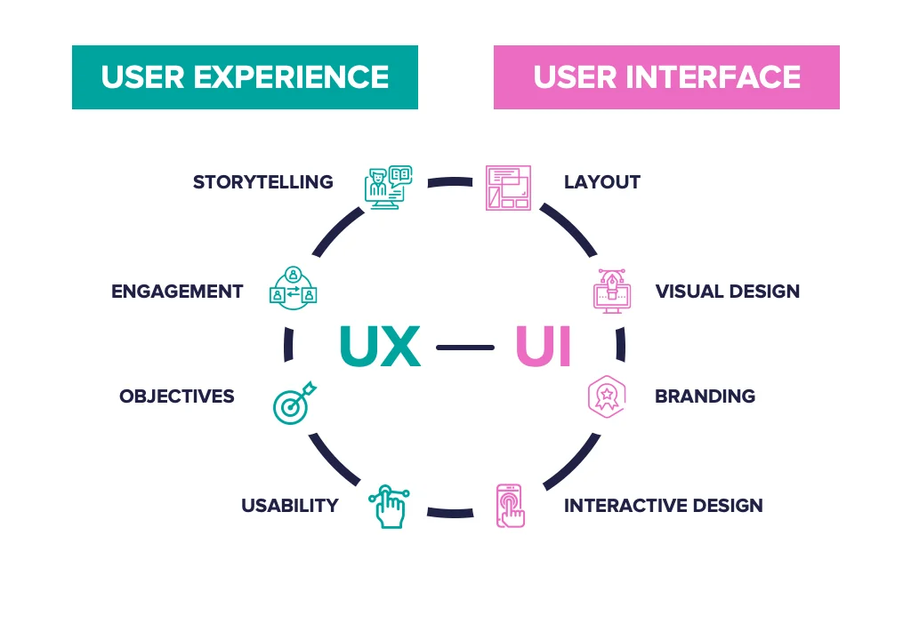

Design: The history of UI/UX
Marc Urbealis ~ October 12th, 2023.
Origins and Early Concepts
The roots of UI/UX design can be traced back to the early days of computing when the user interface primarily consisted of command-line interfaces and text-based interactions. The concept of creating a more user-friendly interface gained prominence with the advent of graphical user interfaces (GUIs). Xerox PARC (Palo Alto Research Center Incorporated) is often credited with pioneering early GUI concepts in the 1970s. Researchers at Xerox PARC, including Alan Kay, Douglas Engelbart, and others, developed systems like the Alto, which featured elements like icons, windows, and a mouse for navigation.
Apple's Contribution
One of the pivotal moments in the history of UI/UX design occurred when Apple introduced the Macintosh in 1984. Apple's co-founder, Steve Jobs, along with a team of designers led by Jef Raskin and later refined by Susan Kare, played a crucial role in popularizing user-friendly interfaces. Kare, a graphic designer, created some of the first iconic graphical elements, including the Macintosh's original icons and fonts. The Macintosh's graphical user interface set new standards for user-friendly design, introducing concepts like drag-and-drop and a visually intuitive desktop metaphor.
Microsoft Windows and GUI Standardization
In the late 1980s and early 1990s, Microsoft Windows emerged as a dominant player in the personal computing landscape. With Windows 3.0 in 1990, Microsoft brought GUI elements to a broader audience, standardizing interface components and making computing more accessible. The competition between Apple's Macintosh and Microsoft's Windows during this era helped refine UI/UX principles and establish some common design patterns.
The Rise of the Internet and Web Design
The advent of the World Wide Web in the early 1990s ushered in a new era for UI/UX design. Tim Berners-Lee's creation of the first web browser and the development of HTML by figures like Sir Tim Berners-Lee and Marc Andreessen paved the way for designing user interfaces for the web. As websites proliferated, designers began grappling with the challenges of creating intuitive and engaging user experiences on the internet.
Human-Computer Interaction (HCI) and Formalization of UX:
The academic field of Human-Computer Interaction (HCI) played a crucial role in formalizing the principles of user experience design. Researchers like Donald Norman, Jakob Nielsen, and Ben Shneiderman contributed foundational theories and concepts. Norman's book "The Design of Everyday Things" (1988) introduced the idea of user-centered design, emphasizing the importance of designing products with the user's mental model in mind.
Mobile Revolution and Touchscreen Interfaces:
The introduction of smartphones marked a paradigm shift in UI/UX design. Apple's iPhone, launched in 2007, with its touchscreen interface and innovative interactions, set new standards for mobile design. The development of app ecosystems further refined mobile UX principles, emphasizing gestures, simplicity, and responsive design.
Current Trends and Innovations:
As of the early 21st century, UI/UX design continues to evolve rapidly. The advent of new technologies such as augmented reality (AR), virtual reality (VR), and voice interfaces presents new challenges and opportunities for designers. Design systems and frameworks, such as Google's Material Design and Apple's Human Interface Guidelines, provide standardized principles for creating cohesive and consistent user experiences.
Key Influencers in Modern UI/UX Design
Several individuals have made significant contributions to modern UI/UX design. Don Norman, as mentioned earlier, has been a pioneer in human-centered design thinking. Jakob Nielsen, a usability expert, has been instrumental in developing guidelines for web usability. Steve Jobs, with his emphasis on elegant design and user experience, left an indelible mark on the field. Additionally, contemporary designers like Don Norman, Aarron Walter, and Sarah Doody continue to shape UI/UX design through their writing, speaking engagements, and contributions to the field.
Conclusion
The history of UI/UX design is a rich tapestry woven by the collaborative efforts of visionaries, designers, engineers, and researchers. While the field has come a long way from the early days of command-line interfaces, its essence remains rooted in creating interfaces that are not only visually appealing but also intuitive, accessible, and centered around the needs and expectations of users. As technology continues to advance, the ongoing collaboration between designers, engineers, and user experience professionals will undoubtedly shape the future of UI/UX design.